TWCERT/CC
Subscribers of TWCERT/CC E-Newsletter
Service awareness and usage rate
The total valid sample size is 501, 18.4% of them are members of TWCERT Alliance. 32.3% of their main business or services are related to cybersecurity, 48.5% are not related to cybersecurity, but have a cybersecurity department. Only 19.2% have no businesses or services related to cybersecurity, and have no department covering cybersecurity.
The TWCERT/CC service with the highest awareness is “notices on cybersecurity vulnerabilities”. Among the members of TWCERT Alliance who are e-newsletter subscribers, up to 94.3% are aware of the service of “notices on cybersecurity vulnerabilities”. 88.7% of the interviewees from cybersecurity-related departments are aware of it, so are 78.1% of those from departments not related to cybersecurity.
A3.Which services provided by TWERT/CC do you know about?(MA)
A4.Which of TWERT/CC's main services has your company/organization used or come into contact with before?(MA)
Figure 1 Service awareness and usage
Evaluation of the overall satisfaction and value perceptions
Regarding satisfaction of the interviewees toward the overall quality of the TWCERT/CC services, the average score is 4. Around 20% of the interviewees are “very satisfied” and over 50% of them are “satisfied” with the quality of the TWCERT/CC services. The overall score for satisfaction of technical support is 3.9. About 20% of the interviewees are “very satisfied” and 47.7% of them are “satisfied” with the service.
The score of trust in TWCERT/CC is 4.1. 27.1% of the interviewees “totally agree” that they trust TWCERT/CC, while over 50% of them “agree.” The score of service value is also 4.1. Nearly 30% of the interviewees “totally agree” that the services provided by TWCERT/CC are valuable, while over 50% of them “agree” with the value of the services.
Collecting and sharing cybersecurity intelligence
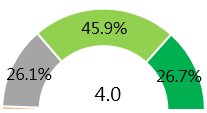Reporting and responding to cybersecurity incidents
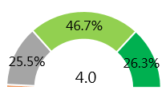Cybersecurity E-newsletter
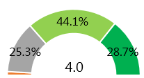
B2.On the whole, have the following services provided by TWERT/CC been helpful to the operation of your company? Please rate the helpfulness of each service.(SA)
n=501
Figure 2 Service helpfulness
Service Quality
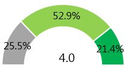Technical Support
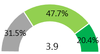I trust TWNIC
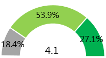Service Provided by TWNIC
are valuable to my business
A1.On the whole, how satisfied are you with TWCERT/CC in the following respects?(SA)
A2.Based on your interactions with TWCERT/CC, how far do you agree with the following statements?(SA)
n=501
Figure 3 Evaluation of satisfaction and value perceptions
Expectations and preferences of Events and Courses
With respect to the conferences or training courses organized by TWCERT/CC, close to 80% of the interviewees expect “downloadable conference or course content summaries”, while around 60% of them expect “upload videos”. Approximately 50% of them hope for “host Chinese speakers or provide instant translation.” Nearly 20% of the interviewees have special preferences for training courses, and they were asked to further specify their preferences. Regarding the form of courses, 62.2% of the interviewees prefer “online training”, while 57.1% of them hope that “face-to-face training” is available. As to the time arrangements for the courses, a higher percentage of the interviewees prefer “all-day training” (48.0%), followed by those hoping for the training courses to be held on weekdays.
G5_1.Do you have any preference or timing for training courses? (SA)
E7.What preferences do you have for training courses? (MA)
n=501
Figure 4 Participation in events and expectations and preferences
The interviewees wish to add the following issues or information:
「Cybersecurity technologies - Anti-hacker measures, defense against web penetration, digital identification」
「Cybersecurity literacy - Promotion of cybersecurity awareness among employees, corporate defense planning」
「Hands-on operation」
「Innovative application - IoT」
Information service
The overall score for attention to the information published by TWCERT/CC is 4. 18.6% of the interviewees “always” pay attention, while close to 40% of them “often” do so. 36.1% of them pay attention “sometimes.” The primary reason why the interviewees pay attention to the information published by TWCERT/CC is “to keep up with Internet news” (77.5%), followed by “work requirements” (about 70%) and “personal interest” (close to 60%).
F1.How often do you take note of the information TWERT/CC publishes?(SA)
n=501
Figure 5 Frequency of attention
F2.Why do you follow the information published by TWERT/CC?(MA)
n=501
Figure 6 Reasons for attention
What do you hope to see in the Internet-related news and intelligence provided by TWERT/CC in the future?(MA)
n=501
Figure 7 Issues expected
Expectations and recommendations
This type of stakeholders mainly obtains Information Security-related report through the newsletter and can get the latest information to prevent disasters beforehand. Therefore, the survey results also show that they have a strong demand for information related to Information Security. Hence, the depth and breadth of the relevant information can be increased. When an actual Information Security incident occurs, further follow-up announcements can be made. The incident can be handled collaboratively, and If necessary, cooperate with foreign information security organizations to speed up the handling process.
Taiwan CERT/CSIRT Alliance
Service awareness
The total valid sample size is 8. Awareness is higher for the services of information sharing and notices on cybersecurity vulnerabilities provided by TWCERT/CC
A3.Which services provided by TWERT/CC do you know about?(MA)
n=501
Figure 8 Service Awareness
Evaluation of the overall satisfaction and value perceptions
With respect to the helpfulness of the TWCERT/CC services, “collecting and sharing of cybersecurity intelligence” has the highest score of 4.1. The highest percentage of interviewees consider the service to be “helpful.” “Reporting and responding to cybersecurity incidents” receives a score of 3.9, with over 60% of interviewees considering the service to be “helpful.” In the case of “cybersecurity e-newsletter,” the score is 3.8. Around 10% of interviewees consider the service to be “very helpful” while 50% of them think it’s “helpful”.
The score for those interviewees considering the services provided by TWCERT/CC to be valuable is 4.3, with close to 40% of them “totally agree.” The score for those interviewees saying they trust TWCERT/CC is 4.1, with 37.5% of them “totally agree.”
Collecting and sharing cybersecurity intelligence
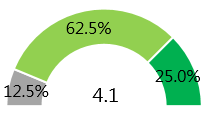Reporting and responding to cybersecurity incidents
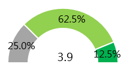Cybersecurity E-newsletter
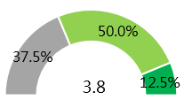B2.On the whole, have the following services provided by TWERT/CC been helpful to the operation of your company? Please rate the helpfulness of each service.(SA)
n=501
Figure 9 Service helpfulness
Collecting and sharing cybersecurity intelligence
Reporting and responding to cybersecurity incidents
Raise security awareness within society
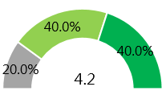
I trust TWNIC
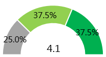Service Provided by TWNIC
are valuable to my business
A1.On the whole, how satisfied are you with TWCERT/CC in the following respects?(SA)A2.Based on your interactions with TWCERT/CC, how far do you agree with the following statements?(SA)
n=8
Figure 10 Evaluation of satisfaction and value perceptions
Participation in events and expectations and preferences
During the most recent year, the rate of participation in the conferences or events organized by TWCERT/CC was 100%. The primary reason why the interviewees have paid attention is “to keep up with Internet security news” followed by “work requirements” and “personal interest.”
E8.Why do you take note of the information TWCERT/CC publishes? (MA)
n=501
Figure 11 Reasons for attention
Expectations and recommendations
The members of the Alliance hope that TWCERT/CC can develop business, organize events and use more diversified channels to communicate with or provide information to them. They further expect TWCERT/CC to integrate the information and provide product interfaces.